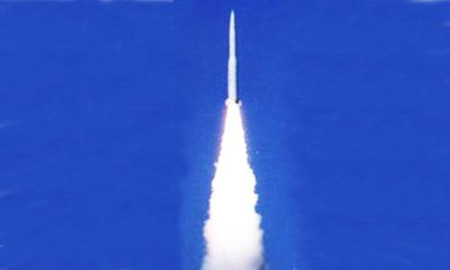

2014-07-25 18:51:00
两天前（2014年七月23日）中共進行了其第三次陸基反導技術試驗，又獲成功。如同前两次，這次試驗仍然在新疆舉行，靶弹仍然是射程1000+公里的東風16，攔截弹也仍然是紅旗19。

紅旗19
很多人喜歡拿美國的陸基反導系统來和中共的系統相比，但是其實雙方由於戦略環境和需求的不同，所建的系統也不同，不能直接對比。詳細來說，美國有两個系统：首先是THAAD（Terminal High Altitude Area Defense，終端高高度區域防御），在2006到2012年之間，13次測試9次攔截成功，2009年開始實戦部署；其次是GMD（Ground-based Midcourse Defense，陸基中段防御），同様自2006年開始測試，至今8次測試只有4次攔截成功，實戦部署還遥遥無期。
THAAD和GMD的主要差别在於前者在敵方弹道導弹的軌跡終端（重入大氣層的前後）進行攔截，而後者則在敵方弹道導弹的軌跡中段（大氣層外的自由抛物線階段）進行攔截；前者適合打像飛毛腿這類的短程導弹或保護已知的固定目標，而後者可用來攔截遠程或甚至洲際弹道導弹的；前者適合對付北韩或伊朗，而後者則是防衛美國本土用的。
那麼紅旗19呢？它的尺寸界於THAAD和GMD之間，用來作終端攔截時射程是THAAD的三倍，也可以作中段攔截，使用和GMD同類的KKV（kinetic Kill Vehicle，動能殺傷器），但是射高和射程都比不上GMD，主要是針對像“大地”系列這様的中程弹道導弹而設計的，所以適合對付印度這類三流强權。美國也有同様的方案，叫做ETI（Evolved THAAD Interceptor，演化THAAD攔截器），基本上是把THAAD多加一級火箭，不過因為没有急迫的戦略需求，也就還没有上馬。
整體來看，中共的反導技術已經追趕到差美國大約五年的地步，由於關鍵的技術（KKV和預警衛星）都已突破，最終完全趕上只是時間問题而已。除了處於第一梯隊的中美之外，目前有反導研究計劃的，只有俄國，以色列和印度三國。俄國基本上仍然依靠蘇聯時期的系統，没有精確的制導能力，必須用核子弹頭在太空消滅敵方導弹。以色列的防御重點是火箭炮，對真正的弹道導弹則依靠THAAD和愛國者三型（和THAAD功能相似，但射高射程更小）。印度的系統尺寸類似紅旗19，但是射高射程還不如THAAD，而且没有自己的预警衛星，只有在預先知道靶彈的軌跡和發射時間的情況下才有攔截成功的可能；由於其雷達和製導系統都必須從以色列進口，繼續發展的前途渺茫，基本上是做心理安慰用的。